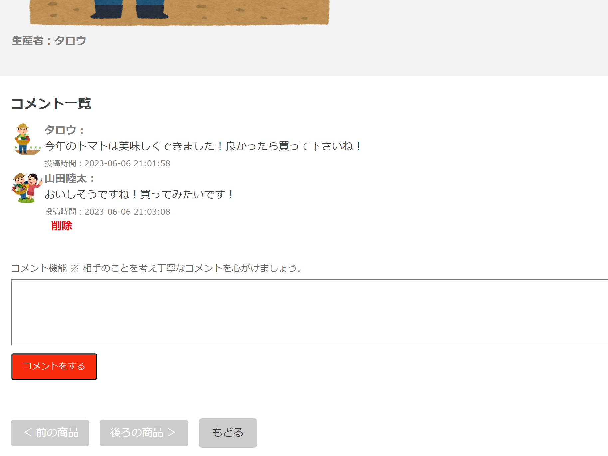
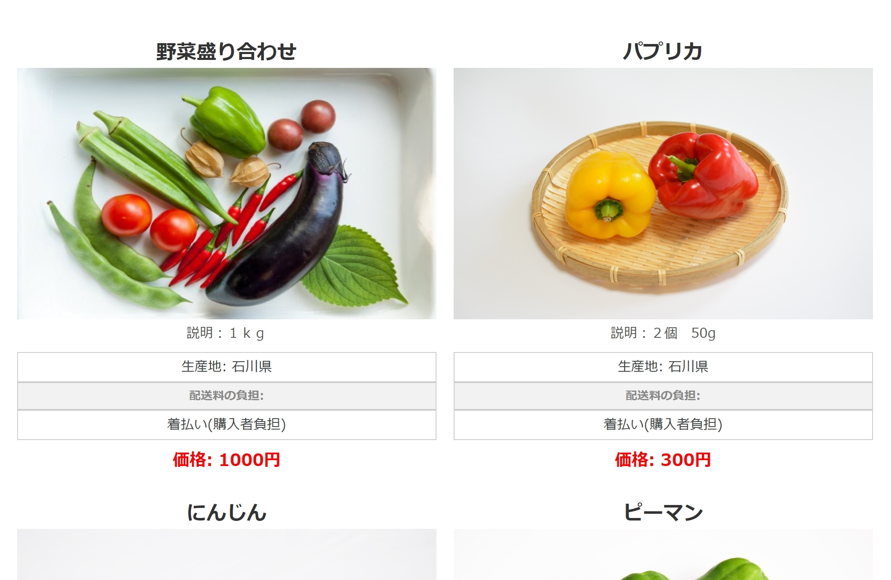

オンラインマルシェ（オンラインマルシェアプリ）
開発環境
Ruby / Ruby on Rails / MySQL / GitHub / Heroku / Visual Studio Code / Trello
-
概要
制作時間 50時間 URL https://marche-kfg8.onrender.com ID admin PASS 2222 -
動作テスト
テスト用アカウント
mail t@t PASS t111111
OUTLINEアプリケーションの概要
オリジナルアプリケーションとして、手作り野菜を気軽に出品でき購入でき、生産者を購入者が気軽につながれるアプリケーションを作成しました。
主な機能はユーザー登録、商品一覧、商品購入、コメント機能です。
トップページからユーザー登録、ログイン画面、ユーザー詳細、商品一覧、商品購入遷移できます。
商品詳細ページより購入画面、生産者とユーザーがコメントできます。
-
開発に至った経緯
実家が農家であり、また知り合いが退職してから家庭菜園されている背景の中で、生産した野菜をネット販売してみたいが出品するのは難しいという課題があることがわかりました。
その課題を解決するために、簡単に出品できて、購入者と生産者が気軽に繋がれるアプリケーションを作成しました。 これからの少子高齢化社会で退職後、家庭菜園されている方が増えている昨今、趣味を活かせるアプリ、社会とつながれるアプリ、 ご近所さんから気軽に野菜購入や販売するイメージをコンセプトにアプリケーションを作成しました。
-
開発で工夫したこと
1つ目がコメント機能です。文章のみだと無機質に感じるので、コメント発信者の写真が表示されるように作成しました。
2つ目が商品詳細ページに前の商品、後ろの商品に遷移できるようにしました。
-
今後実装したいと思っていること
カお気に入り機能、カテゴリー別商品表示です。
1つ目が、人のつながりを重視して為、お気に入り機能でより身近に感じようにしたいと思います。
2つ目がターゲットが高齢の方なのでカテゴリー別商品表示により使いやすいようにしたいと思います。
コンセプトの誰でも簡単に出品購入できるような表示方法や遷移を追加していきたいです。